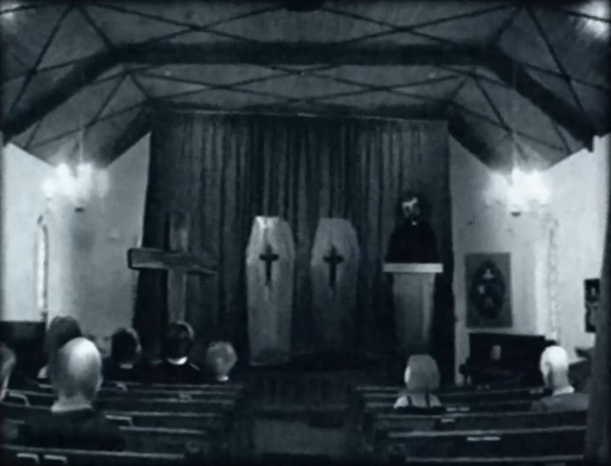

in loving memory of
EDWARD WALTEN (1962-1974)
MOLLY WALTEN (1965-1974)
if there is a natural body. there is also. a spiritual body...
Springton Community Church



Edward and Molly Walten may have lived a short time in this land. They lived as children full of energy and joy.
They brought love to those close to them... Please, do not cry for this loss. They're with the lord now. Edd and his sister Molly may be gone.. from this hurtful plane.
But their presence in this community will remain, and leave a mark that should last for decades. Let this be their legacy. Ashes to ashes, dust to dust.
In the name of the Father, and of the Son, and of the holy spirit. Amen.
EDWARD WALTEN (1962-1974)
MOLLY WALTEN (1965-1974)
if there is a natural body. there is also. a spiritual body...
Springton Community Church

Edward and Molly Walten may have lived a short time in this land. They lived as children full of energy and joy. They brought love to those close to them... Please, do not cry for this loss. They're with the lord now. Edd and his sister Molly may be gone.. from this hurtful plane. But their presence in this community will remain, and leave a mark that should last for decades. Let this be their legacy. Ashes to ashes, dust to dust.
In the name of the Father, and of the Son, and of the holy spirit. Amen.